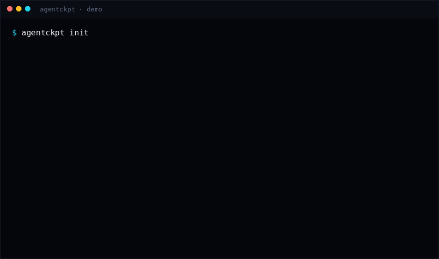

v0.1.0 · MIT · zero deps · git on PATH
Rewind the agent.
Leave git alone.
agentckpt drops checkpoints of your whole working tree, untracked files included, into a private store under .agentckpt/. When a coding agent wrecks things, put any checkpoint back. Your branches, index and history stay exactly where they were.
uvx --from git+https://github.com/Blackman99/agentckpt agentckpt demo
For Codex, Claude Code, Gemini CLI, OpenCode, Cursor agents: anywhere /undo is missing or unreliable.
- README.md
- src/app.py
- src/utils.py
- notes.mduntracked
- scratch.py
before agent
The incident log
- /undoThe undo button went away.
Codex removed
openai/codex#9203 · 522 👍/undo. The issue asking for reliable rollback is still open. - untrackedGit never saw the file the agent deleted.
v2ex.com/t/1220282git restoreonly knows tracked content. New modules, notes and configs vanish without a copy. - wipStash and WIP commits leak into history.
They go through your index, reflog and branch. Agent noise ends up in the repo you ship.
v2ex.com/t/1218209
How it works
Two repositories. One working tree.
agentckpt runs every git command as git --git-dir=.agentckpt/git --work-tree=., so snapshots live in a separate store with its own index and history. Scroll through one agent turn (or tap a step).
- 01
init
$ agentckpt initCreates
.agentckpt/and appends one line,.agentckpt/, to your.gitignore. That's the only file of yours it ever edits. - 02
snap
$ agentckpt snap -m "before agent" b66469f 3 files before agentStages the whole tree, tracked and untracked, honouring
.gitignore, skipping files over 10 MiB, and commits in the shadow store. - 03
the agent runs
# edits a.txt, deletes untracked.md, # creates new.pyOptional:
agentckpt watchpolls the tree and auto-snaps whenever files change. - 04
restore
$ agentckpt restore b66469f Skipped 1 conflict(s) … re-run with --force ! a.txt Restored 2 file(s): + untracked.md … $ agentckpt restore b66469f --force Restored 3 file(s)Bytes are written straight back into the tree. Files that differ are refused (exit 1) until you say
--force. - 05
git never noticed
$ git log --oneline 63fc0ae baseNo
add, nocommit, no checkout, no branch moves in your real repo. Same HEAD, same index.
Eight commands
Small CLI. Honest rules.
- initcreate the shadow store
- snapcheckpoint incl. untracked
- watchstdlib polling auto-snap
- lslist,
--json - diffvs tree or
--toid - restore
--force,--path - prune
--keep 50 - doctorsanity check
0 success · 1 partial (conflicts skipped) · 2 hard error
Recorded
The same demo CI runs
agentckpt demo builds a temp tree, snaps it, corrupts it, restores it, checks the conflict rule, prunes and runs doctor.

Install
Python 3.9+, git on PATH. Nothing else.
Not on PyPI yet. v0.1.0 ships as a wheel on GitHub Releases.
uvx --from git+https://github.com/Blackman99/agentckpt agentckpt demopipx install https://github.com/Blackman99/agentckpt/releases/download/v0.1.0/agentckpt-0.1.0-py3-none-any.whlagentckpt init && agentckpt snap -m "before agent"Limits, v0.1.0
What it won't do
- Restore doesn't delete. Files the agent created after the snapshot stay.
agentckpt diff <id>shows them. - Only what it saw. Gitignored files and files over 10 MiB (
--max-bytes) aren't stored. - Polling, not hooks.
watchmay catch a half-written state. Agent hooks are planned for v0.2. - An undo buffer, not a backup. The store lives in the project, so
git clean -fdxremoves it too.